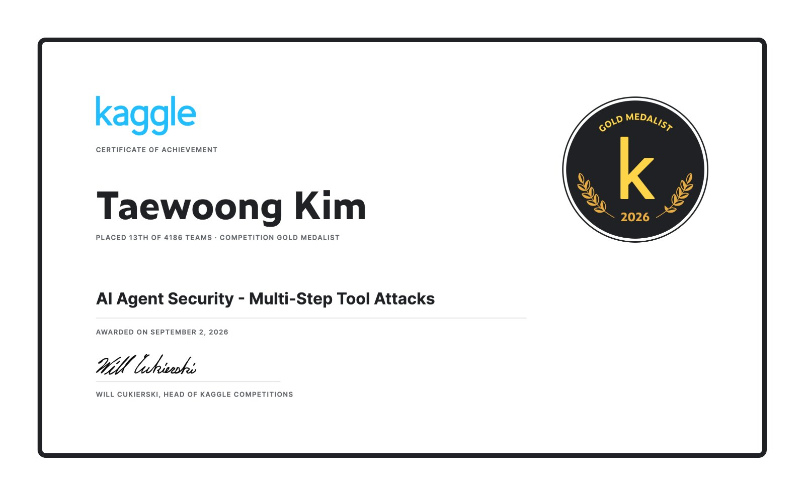

요약
- 병원 폐쇄망 온프레미스 의료 LLM 서빙 — 동시접속 100명 이상(자가 GPU 서버).
- LLM은 파인튜닝(SFT·LoRA, RL: DPO/GRPO)부터 양자화(GPTQ/AWQ/W4A16), vLLM 서빙까지 혼자 붙는다. 100B+ 파라미터 오픈 가중치 모델도 파인튜닝해봤다.
- Kaggle Competitions Expert(전 세계 상위 0.2%)
- OpenAI AI Agent Security 🥇 13위
- 수학문제 분류 3위
- AIMO Progress Prize 2 🥈 은메달
- ARC Prize 2024 🥉 동메달
- Zindi · FAO/ITU 위성 양식장 탐지 상위 3%
경력
퍼즐에이아이 — AI / NLP 연구원
의료 LLM(생성형 의무기록)의 학습·양자화·온프레미스 서빙을 진행했다 — 동시접속 100명 이상, 병원 폐쇄망 내부 배포.
- 온프레미스 서빙 — 병원 폐쇄망/자가 GPU 서버에 LLM 배포, 100명 이상 동시접속용 이중화 서버 구성
- 100B+ 파라미터 오픈 가중치 LLM 파인튜닝(LoRA, RL: DPO/GRPO). 멀티 GPU 분산학습. 가용 GPU 예산에 맞춘 서빙 구성 설계
- 양자화(GPTQ/AWQ/W4A16)로 속도·VRAM 최적화 — 공개 레시피가 없던 모델군의 AWQ 레시피를 직접 구축, 추론 속도 약 2.5배 향상
- vLLM 서빙 안정화·재현성 확보. GBNF constrained decoding으로 구조화(JSON) 출력 안정화. 서빙 이미지 빌드 30분 → 11초
- 진료문서 요약 백엔드 — 장문 요약 처리 및 생성 안정화, 에러코드 스펙 표준화
- 병원 의무기록 파이프라인 구축·운영. 실기록 기반 LLM 파인튜닝(온프레미스). 병원 현장 시연
- 팀의 LLM 서빙 스택으로 vLLM 도입·정착(구조화 출력, 서빙 이미지, 양자화 서빙). 임베딩·리랭커 모델을 교체해 검색 품질을 끌어올림(한/영 임베딩 분리)
- 경량 LLM 기반 CDSS(2023.10~2024.12) — 병원용 임상 의사결정 지원: GPT로 학습데이터 생성·라벨링, 오픈 LLM 파인튜닝 후 온프레미스 배포 형태로 변환
- 정밀의료 R&D(2020.11~2023.02, 대학병원 공동연구) — 혈액암 변이 연구: 문헌조사, 데이터 수집·전처리·분석·모델링
- 초기(2019.11~2020): 한국어 의료 NLP — 증상 추출 및 의료 텍스트 분류
PythonOpen-weight LLMsLoRA · DPO/GRPOGPTQ · AWQ · W4A16vLLMFastAPIOn-prem
프로젝트
QR 영수증 상품권 (사이드 프로젝트)
가맹점에서 상품권 환급을 처리하는 웹 서비스. 고객이 매장에서 QR을 찍고 영수증 사진을 올리면 금액·영수증 번호를 읽어 환급 등급을 정하고, 발급 내역을 기록하고, 중복 청구를 막는다. 관리자 화면에서 환급액 설정·기록 관리.
- 2026년 상용 출시, 가맹점에서 실제 사용 중
- 1인 풀스택 개발·운영 — 기획, 개발, CI(GitHub Actions), 무중단 AWS 배포
Next.jsTypeScriptPostgreSQLAWSDocker
뷰티/헬스 AI 제품 (사이드 프로젝트)
뷰티/헬스 AI 제품 개발을 이끌었다 — 실시간 음성 어시스턴트, 두피/피부 진단 CV, 온디바이스 숏폼 자동생성을 실제 출시. 스펙·리뷰는 직접 하고 구현의 대부분은 AI 코딩 에이전트로 돌렸다.
- 실시간 앰비언트 음성 어시스턴트 — 실시간 STT/번역, 문장 경계·엔드포인트 튜닝
- 두피 진단 CV — 공개 벤치마크 재현 후 추월(macro-F1 0.744 vs 0.689)
- 얼굴 피부 진단(8개 속성) — 속성별 순서형 등급 모델. 배포 MAE ~0.49, ±1등급 이내 ~94%
- 학습·추론 전처리를 맞춰 배포 정확도를 끌어올리고 온디바이스 8개 모델 출시
- 온디바이스 숏폼 자동생성·렌더링 — 생성 진행 UI, 동적 편집(페이드아웃, 정지프레임 트림, 구간 클램핑), 배경음악, 세션 유지
AI agentsreal-time voicePyTorchffmpeg
대화형 AI 서비스 (사이드 프로젝트)
멀티모달 대화형 AI 서비스의 AI/ML 엔지니어 — 감정분석, 음성/영상 생성, NLP 툴링 등 AI 기능 개발·출시.
- 감정 분류기 — 직접 ~1,500건 라벨링, 7-class, CPU 추론 0.06초. 하이퍼파라미터 탐색
- 멀티모달 AI — TTS/음성 클로닝, 토킹헤드 영상, 이미지 캡셔닝, 음성 향상, 이미지 생성(API 연동+튜닝)
- NLP 툴링 — 임베딩 유사도 기반 반복 회피, 비속어/텍스트 모더레이션, 문장 분리
- 다단계 캐릭터 생성 프롬프트 엔지니어링. 클로즈드 베타(100명) 데이터 분석. 서비스 전체 QA·출시 테스트
NLPmulti-modal AIprompt engineeringdata labelingQA
수상 · 컴페티션 (개인)
Kaggle Competitions Expert
전 세계 상위 0.2%- Kaggle AI Agent Security (OpenAI) — 🥇 13위(2026년 9월). 커널 전용 레드팀 벤치마크. 공개 보드는 마커 탈취 경쟁이었으나 프라이빗에서 해당 계열이 무효화. EXFIL 노트북 1개 + confused-deputy 노트북 1개(2개 중 상위 득점)로 헤지 — 공개 ~117위 → 🥇 프라이빗 13위.
- Kaggle 수학문제 분류 — 3위(2025년 5월). 생성형 분류를 constrained decoding으로 재구성 — Logits Processor가 출력을 라벨 토큰으로 제한, temperature=0·max_tokens=1로 형식 오류 제거. → 공식 3위 솔루션 라이트업
- Kaggle AIMO Progress Prize 2 — 🥈 은메달(2025년 3월). 배치 추론용 추론 모델 파인튜닝·양자화. 엄격한 토큰 예산 안에서 다중 샘플 majority-vote self-consistency.
- Kaggle ARC Prize 2024 — 🥉 동메달(2024년 11월). 미지의 태스크에 대한 추상 추론.
Zindi · FAO/ITU 위성 양식장 탐지
상위 3%- 학습/테스트 간 도메인 차이가 커서 리더보드로 직접 검증: 테스트타임 자가학습으로 공개 점수 0.916 → 0.941 향상. 순위보다 분산 기준으로 최종 제출을 골라 프라이빗 반전을 버팀.



기술 스택
언어Python
LLM / GenAI파인튜닝·학습(SFT·LoRA), RL(DPO/GRPO) 경험, 양자화(GPTQ/AWQ/W4A16), vLLM 서빙·온프레미스 배포, 구조화(JSON) 출력 수정, RAG·검색(임베딩 검색·리랭킹)
NLP / CV / 데이터한국어 의료 텍스트 처리/분류 · PyTorch 이미지분류 모델 학습·논문 재현 · 데이터 분석(pandas)·라벨링
서빙 / 인프라vLLM·FastAPI, Docker, Kubernetes, 온프레미스(폐쇄망) GPU 서빙, W&B
AI 에이전트AI 코딩 에이전트(Claude, GPT/Codex)를 쓴다 — 스펙·아키텍처·리뷰·검증은 직접 하고, 덩치 큰 구현만 에이전트로 돌린다. (퍼즐에이아이 초기/중기 코드, 캐글 솔루션, 데이터 라벨링·모델 학습은 전부 직접 했다.)
커뮤니티 · 리더십
learnup 스터디 — 운영자/리더 · 소모임 앱
- 50명 넘는 모임을 1년 넘게 굴렸다. 평일 퇴근 후 카페에서 매일 오프라인으로 모이고, 일정·장소·진행을 직접 챙긴다
학력
학력—
링크
Kagglekaggle.com/aleaiest
Hugging Facehuggingface.co/qwertist